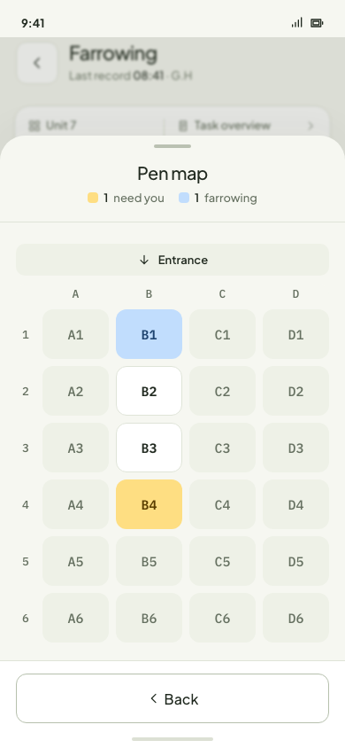
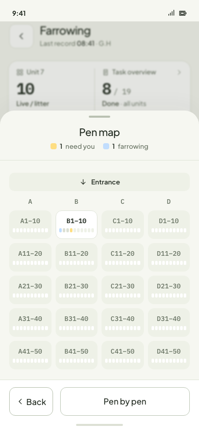
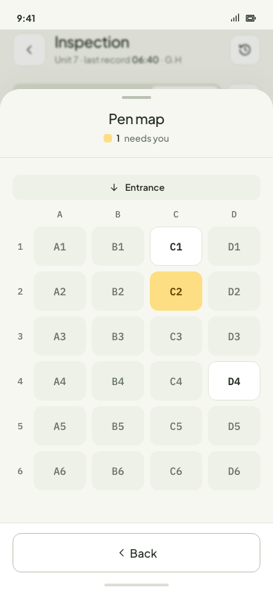
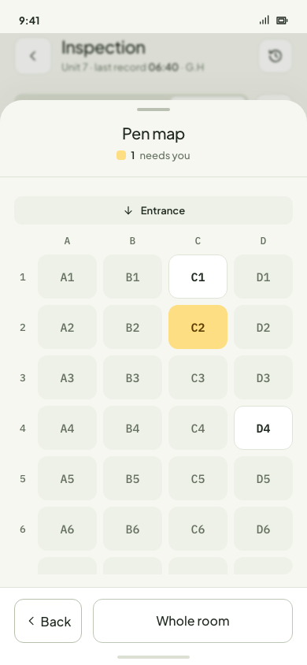
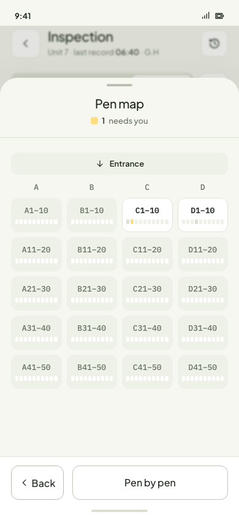
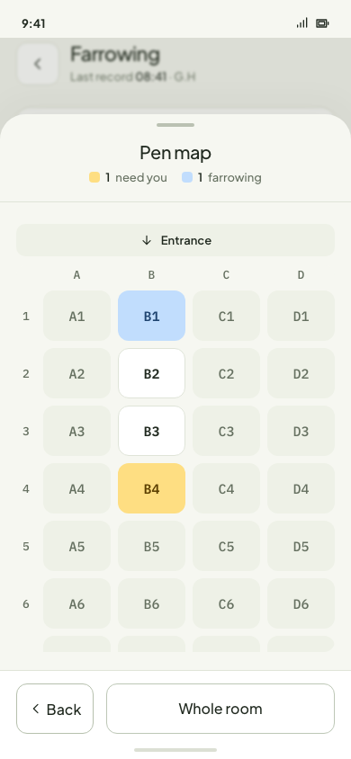
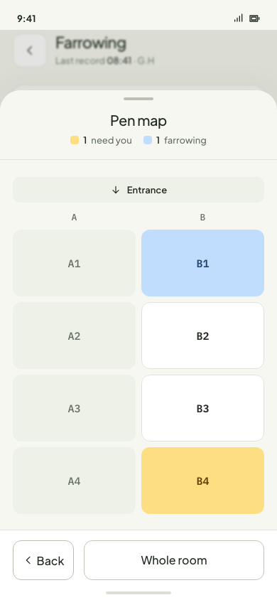

Bring the latest PenMap into Farrowing and Inspection
These 390 × 844 screens come from the live prototypes, with only sample room geometry swapped by mock.mjs. The shared PenMap already draws the new room shapes and Whole room. The proposed host fix lets its new button work. No prototype or atlas source has changed.
1 · Farrowing
The current 4 × 6 room stays visually the same. With a longer saved room layout, the map adds Whole room beside Back. Each shared tile preserves the pen status marks.



2 · Inspection
The same component behaviour on the walk. Inspection's colour mapping remains amber, white and quiet; it never creates a blue in-progress state.



3 · Host click bug found in both features
On a long room the component inserts Whole room, but the current host listeners redraw the sheet on that button's empty action. The proposed hosts leave this component button to PenMap.

4 · Mixed pen sizes and a row at the far end
PenMap already draws unequal runs using relative tile heights and a separate row after the lanes. Farrowing's sample currently supplies fixed 4 × 6 geometry; the host will pass the saved layout's PenMap props instead.
